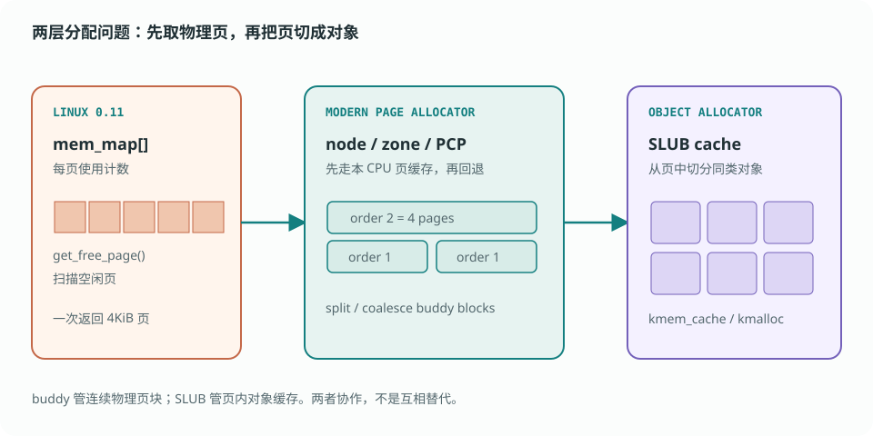
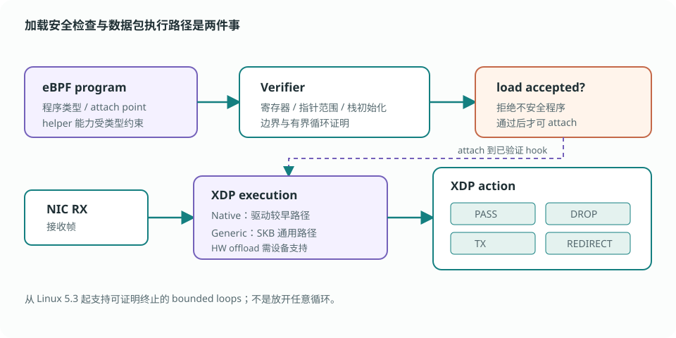

从 Linux 0.11 到现代内核：机制如何演进
读懂 0.11 的价值，不是把旧结构硬套到今天，而是看清每个子系统持续解决的同一个问题：谁拥有内存、谁先运行、代码如何扩展、数据包在哪个阶段被处理。
Memory · Scheduling · Modules · eBPF/XDP先区分概念延续与实现延续
Linux 0.11 的内存分配器、调度器和驱动框架都很小，但这不代表现代内核只是把同一段代码写得更长。硬件拓扑、SMP、NUMA、设备模型、并发和安全要求改变后，数据结构和调用路径也必须改变。
因此，本章每个主题都分成两层：问题层（为什么系统需要这种机制）与实现层（该版本具体用什么结构、算法和接口）。例如“分配一页物理内存”是长期存在的问题；0.11 的 mem_map[] 扫描与现代 buddy allocator 却不是同一个实现。
物理页分配与小对象分配是两层
在 0.11 中，mem_map[] 是按物理页索引的使用计数数组：空闲页标记为 0，分配页的计数递增；get_free_page() 扫描它并返回一个 4KiB 页面。它不是位图，也没有按 2 的幂次管理连续页块。
现代内核的物理页分配通常由 buddy page allocator 管理。一个 order-n 块包含 2^n 个连续物理页；如果请求的块更小，分配器可以拆分更大的空闲块，释放时则尝试与同阶 buddy 合并。实际系统还要考虑 NUMA node、zone 和 per-CPU pageset 等快速路径，不能只用“一个全局空闲链表”来概括。
小对象又是另一层问题。内核大量分配 task_struct、inode、dentry 等对象，反复直接申请整页会浪费空间和时间。SLAB/SLUB 一类对象缓存分配器在页分配器之上按对象尺寸管理缓存；这个切换可以直接从上游 Kconfig 验证：v2.6.22 的 init/Kconfig 默认选择 SLAB，v2.6.23 改为默认 SLUB。SLAB 后来在 Linux 6.5 被标记为 deprecated，并于 6.8 从主线移除；当前主线只保留 SLUB。SLUB 并非取代 buddy，而是改变页内对象缓存的组织方式。它们不是 buddy 的替代品：buddy 管物理页块，SLUB 管页内对象。

| 层次 | 回答的问题 | 典型机制 |
|---|---|---|
| 物理页 | 从哪个 node/zone 取得连续页？ | Buddy allocator、order、PCP |
| 内核对象 | 如何快速重复分配同尺寸对象？ | SLUB cache、kmem_cache、kmalloc cache |
| 虚拟连续区间 | 如何映射物理上不连续的页面？ | vmalloc / vmap 等映射机制 |
counter → O(1) → CFS → EEVDF
0.11 的 schedule() 遍历任务数组，寻找处于 TASK_RUNNING 且 counter 最大的任务；如果没有正的时间片，就按 counter = counter / 2 + priority 重算。任务选择需要扫描任务槽，因此其成本随任务数增长。
Linux 2.5 开发周期引入 O(1) 调度器，以每 CPU 的 active/expired 优先级数组和位图选择可运行任务，避免每次从头扫描全部任务。Linux 2.6.23 引入 CFS：用红黑树组织调度实体，以 vruntime 近似“已经获得的加权 CPU 时间”，从最左侧的实体开始选择。
从 Linux 6.6 开始，公平调度类逐步转向 EEVDF（Earliest Eligible Virtual Deadline First）。它先判断任务是否 eligible（其 lag 表明没有超出应得的 CPU 份额），再在 eligible 实体中选择虚拟 deadline 最早者；请求的 slice 影响虚拟 deadline。EEVDF 仍然是公平调度机制，不是实时调度类里的 deadline scheduler，也不能描述成“专门为实时任务设计”。
关键区分：CFS 的 vruntime 是虚拟运行时间；EEVDF 的 virtual deadline 是在虚拟时间轴上结合 slice 计算的排序键。二者都不等于 wall-clock 绝对时间。
从静态链接到可加载模块
0.11 的顶层 Makefile 把 kernel/kernel.o、mm/mm.o、fs/fs.o 和驱动归档链接成 tools/system，再由 tools/build 组合成启动镜像。驱动是构建时选入的内核代码，不存在今天熟悉的 .ko 加载/卸载生命周期。
现代内核模块通过 Kbuild 构建成 .ko，由内核加载器解析模块元数据与符号依赖。module_init() 指定装载入口，module_exit() 指定可卸载时的清理入口；模块也可以编译进内核，此时初始化宏会转成 built-in initcall。模块代码仍在内核特权上下文运行，不是用户态沙箱；内存错误、竞态和错误的卸载生命周期都可能破坏整个内核。
obj-m := hello.o
# 在已配置并构建的内核树上：
make -C /lib/modules/$(uname -r)/build M=$PWD这段现代命令不能复制到 0.11。0.11 使用自己的旧编译器、汇编器、子目录 Makefile 和静态归档；现代 Kbuild 则依赖已配置的内核构建树、符号版本和模块配置。
eBPF 验证器与 XDP 数据路径
0.98 的 TCP/IP 是一份需要显式启用的早期网络实现；现代 Linux 则允许受约束的程序挂接到多个明确定义的内核扩展点。eBPF 程序类型决定可见的上下文、可调用 helper 和允许的 attach point；并不是“任意 C 代码可以插到内核任意位置”。
验证器会追踪寄存器类型与取值范围、指针来源、栈初始化状态和内存访问边界，拒绝无法证明安全的访问。早期版本要求循环展开；从 Linux 5.3 起，验证器支持能够证明终止条件的有界循环，但循环迭代次数和状态复杂度仍会影响程序是否能通过验证。
XDP 则是网络接收路径上的一种早期处理入口。原生 driver mode 可在驱动构造完整 sk_buff 之前运行；generic/SKB mode 则在通用网络栈路径中运行，兼容性更广但路径不同；硬件 offload 需要设备/驱动明确支持，不能默认假定存在。程序可以返回 XDP_PASS、XDP_DROP、XDP_TX、XDP_REDIRECT 等动作。

跨版本概念对照
| 长期问题 | Linux 0.11 的实现 | 现代内核的典型实现 | 不能混为一谈的地方 |
|---|---|---|---|
| 取得物理内存 | mem_map[] + get_free_page() | zone、PCP、buddy order 分配 | 0.11 的引用计数扫描不是 buddy allocator |
| 取得小对象 | 静态结构/页级分配为主 | SLUB / kmalloc caches | SLUB 建立在页分配器之上 |
| 选择下一个任务 | counter 与任务数组扫描 | 公平调度类 EEVDF 等 | vruntime/virtual deadline 不是旧 counter 的改名 |
| 扩展内核功能 | 编译时静态链接驱动 | built-in + loadable modules | 模块依然运行在内核特权级 |
| 处理网络数据 | 早期可选 TCP/IP 源码 | 多层网络栈、eBPF hooks、XDP | eBPF program type 与 XDP mode 有明确边界 |
动手核对现代内核
- 阅读官方 Physical Memory 文档，画出 node、zone、per-CPU pageset 和 buddy free area 的关系。
- 阅读 SLUB 用户指南，解释 slab cache 的 debug、red-zone 和 poisoning 能检查哪类错误。
- 对照 CFS 设计文档 与 EEVDF 文档，用自己的话说明 eligible 和 virtual deadline。
- 阅读 eBPF verifier 和 bounded loops，找出一个会因越界访问被拒绝、一个可能因复杂度过高被拒绝的程序形态。
自测：SLUB 为什么不是 buddy allocator 的替代品？
buddy allocator 以 order 管理物理连续页块；SLUB 把从页分配器取得的页面组织成对象缓存，优化固定/常见尺寸对象的分配。一个管理页块，一个管理页内对象。
自测：为什么 EEVDF 不应被称为实时 deadline 调度器？
EEVDF 在公平调度类中通过 lag 判断实体是否 eligible，再按虚拟 deadline 选择；它解决的是公平份额与响应性问题，不是实时调度类对绝对截止时间和实时约束的保证。
自测：为什么不能说 eBPF 从 5.3 起允许任意循环？
5.3 起允许验证器证明能终止的有界循环；循环边界、寄存器范围、程序状态数量和验证复杂度仍受约束。不能证明安全或超出验证器复杂度上限的程序仍会被拒绝。
现代官方文档与历史源码
- Linux v0.11 · mm/memory.c：mem_map 与 get_free_page 的历史基线；kernel/sched.c：counter 调度。
- Linux Physical Memory：node、zone 与现代物理页管理；SLUB 用户指南：对象缓存与调试。
- CFS Scheduler；EEVDF Scheduler：公平调度的历史模型与当前演进。
- Building External Modules：现代 Kbuild 外部模块流程；Kernel Hacking Guide：模块入口和内核执行上下文。
- eBPF verifier；上游 bounded loops commit 2589726d12a1；bounded loops 说明；AF_XDP：验证约束、循环和 XDP 用户态数据路径。
最后一个原则：现代文档会持续更新。阅读时要记录文档版本/内核版本，不要把某个当前实现细节反投射到 Linux 0.11。